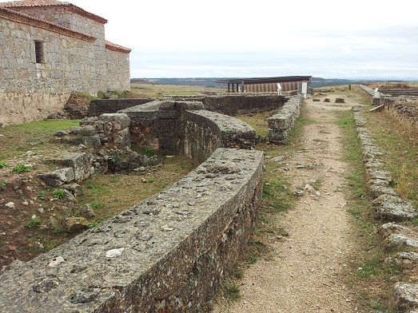
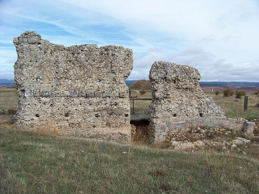

TEATROEl teatro se construyó a finales del siglo I, principios del siglo II. Fue construido aprovechando la pendiente natural, parte de la gradería, la cavea media y superior, están talladas en la roca. La cavea inferior perdida en su totalidad estaría construida en obra de mampostería. La escena y la fachada por los saqueos y voladuras para conseguir piedra han dejado tan solo en pie el armazón del edificio, una estructura de guijarros y argamasa. Era el teatro de mayor capacidad de cuantos existían en Hispania, unos 9.000.- espectadores. La escena tenia unos 25m de altura con sus tres pisos de columnas, mientras que el escenario alcanzaba los 60 metros de longitud y debió tener un diámetro total de 120 metros.En los primeros años del siglo XX, se realizaron unas voladuras
en parte
de la entrada de la ciudad romana, que destruyeron parte del teatro, el lugar por el cuál transcurre la carretera que aún hoy nos lleva a la
ciudad romana.
Ver Teatros romanosLOS ARCOS ISu cronología data del siglo I al III. Edificio termal de esquema simétrico, con palestra, apoditerium, frigidarium y tepidarium desdoblados a partir de un eje longitudinal formado por el caldario y el espacio central comprendido entre las palestras donde se hallaría la natatio. Se accedía a graves del monumental pórtico semicircular columnado que comunica con el exterior. Completa el edificio un conjunto de habitaciones a ambos lados del caldario y unas letrinae. El conjunto muestra diversas fases y reutilizaciones con una función distinta a la de baños de su origen, posiblemente como centro de fabricación de cerámicas hasta finales del siglo V fecha de destrucción del conjunto.Ver Termas Romanas
LOS ARCOS IIEdificio termal no excavado en toda su extensión por lo que se conoce completamente su planta. Su edificación se ha datado en el siglo I. Estaría constituido por una palestra que daría acceso a un apoditerium octogonal por el que se pasaría al frigidarium, tepidarium, y caldarium que comunica con el hipocausto, y en ultimo lugar tendríamos la sudatio. El complejo muestra varias fases de ocupación.
Ver Termas romanas
CASA Nº 1. CASA DE TARACENANo se conocen muy bien sus limites por los lados este y norte. Esta casa excavada por Taracena en los años 30 y reexcavada por Palol nunca ha podido ser correctamente interpretada. Es un conjunto domestico que ocupa una manzana. En su origen era un grupo de casas que del siglo I al V sufrió numerosas transformaciones. Al sur y al este se aprecian habitaciones subterráneas. La casa cuenta con un conjunto de mosaicos de gran interés policromados, de entre los que destaca el denominado mosaico central. Presenta varias fases con múltiples y profundas transformaciones, la última de ellas fechada en el siglo IV. Llama la atención el grupo de habitaciones subterráneas así como el conjunto de mosaicos de las habitaciones centrales.
El último robo en Clunia, el sillar con relieves fálicos que se llevaron con una grúa en 2012 .
CASA Nº 2 Esta casa se identifica a partir de los sondeos que exhumaron algunos muros que mantiene la misma orientación que la casa nº 1.
CASA Nº 3No se conoce en toda su extensión, falta por excavar su mitad NE. En la parte NO, en un primer momento tuvo que ser modificada al construir el foro y posteriormente parte de las habitaciones al construir el macellum y ya en época medieval la Ermita. Algunas de sus habitaciones, las situadas al este de la ermita disponían en sus paredes de pinturas y mosaicos de los que se conserva algún ejemplo. En la esquina oeste se disponen dos habitaciones con mosaicos y otras que inicialmente tenían subterráneos. Su cronología va del siglo I al siglo V.
TERMAS DEL FOROEn la manzana ocupada por la casa nº 3, se construyeron unas termas públicas de tamaño medio, con la secuencia típica de las termas romanas. Estaban situadas estratégicamente junto a un pozo subterráneo para captar el agua.
CASA TRIANGULAROcupa el espacio libre entre el decumanus de la casa nº 3 y el del Foro, por lo que se considera posterior a este último. En una de las habitaciones pegado al muro de cierre se aprecia un mosaico en blanco y negro que enmarca la base de una estructura a modo de pedestal. Se ha datado en el siglo III.
EL FOROLa basílica ocuparía todo el foro solamente esta excavada en su mitad este, comunica con la plaza, a través de tantas puertas como intercolumnios, es un edificio de tres naves, definido a través de hileras de 14 columnas. En el primeros de los intercolumnios. En la nave central se situaría el tribunal. En el lado norte se adosan a la basílica el aedes augusti y una serie de habitaciones cuadradas de imprecisa función. Tenia una longitud de unos 114m.El templo esta situado en el extremo sur del eje del foro, se conservan las hiladas inferiores, basamentos y molduras de su fachada, tiene planta rectangular absidada en su parte posterior. El acceso a la parte superior del podio se realizaba por ambos lados de la fachada desde atrás.Las tabernae por el momento, solo se conocen las de la parte oriental del foro, por delante de ellas discurría un gran pórtico columnado que unía el acceso al foro con el templo y el pórtico situado en su parte posterior. Se han excavado 13 tabernae.
El templo tripartito ocupa el espacio de tres tabernae. Las paredes estaban recubiertas de placas de mármol y estucos pintados. En su interior, se han encontrado numerosos fragmentos de esculturas. En cada habitación al fondo se ha encontrado restos de grandes basas.EDIFICIO FLAVIONo se conoce con precisión su utilidad Su peculiar planta en forma de botella, deja identificar un gran acceso por el norte a través de un pórtico de cuatro columnas, en su interior una serie de basas repiten la forma del edificio como si constituyeran un gran peristilo. El cuerpo principal del edificio es un gran rectángulo acabado en semicírculo en el lado norte con dos espacios arcados situados al este y oeste. No se conoce con precisión la función de este edificio, podría tratarse de un mercado del siglo I.

LAS PAREDEJAS Las llamadas paredejas eran un conjunto de edificios que se conservaban parcialmente, y poblaban el yacimiento de Clunia. Con las labores agrícolas se fueron demoliendo y utilizando el recinto como campo de cultivo que al ser arado iba destruyendo los restos que se escondían bajo tierra. De estas paredejas se conserva el lienzo de un edificio realizado de argamasa y guijarros.
 Ver Video ***************** En julio de 2017 los trabajos previos a la construcción del Centro de Recepción de Visitantes previsto para el yacimiento han sacado a la luz los restos arqueológicos de un monumento funerario.
|